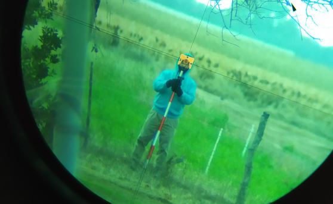
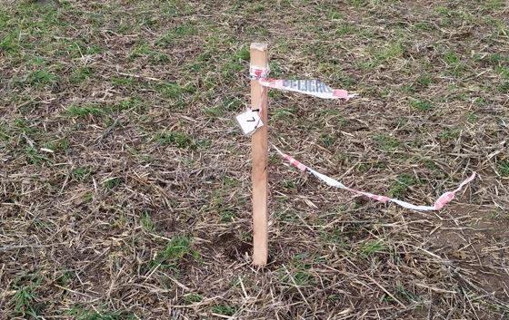

The project included the design of the park, the construction of a country house and a tennis court, which required a survey of the existing objects to define the correct location of the perimeter fences.
A topographic survey was carried out, on which the project was adjusted, and finally the stakes were placed in the vertices of the property.
Process
Survey
A survey of the site was carried out, using a Trimble M3 Total Station, for which initially a reference system materialized from four stakes was built. Some buildings measurements were made with tape measure. After the survey was completed, the data was downloaded and a map of the existing events was made, which was used by the designer to adjust the project.

Stakes Placing
The wooden stakes of 5cmx5cm by 120cm high, had the name assigned according to the plan written on the surface, and a plastic sheet attached to them. After adjusting the project, a stakeout of each of the vertices of the fences and gates to be placed was carried out, materializing each one with a stake.
